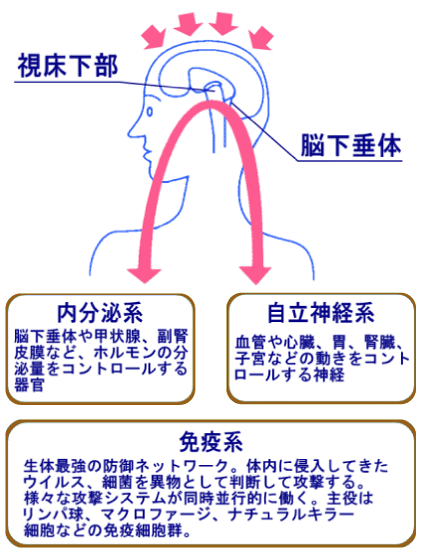

简体中文
简体中文


がんでお悩みの方へ
今、あなたはがんのことでお悩みかもしれません。
ご自身が、身内の方が、或いはお知り合いの方ががんを患っているのかもしれません。
そんなあなたにお伝えしたいことがあります。
今や２人に１人が、がん患者とも定義されている今日。
がんは誰しも身近な問題となっています。
今も、日々がんと闘っている人がいっぱいいます。
手術、放射線、抗がん剤。
この三大治療が、がんの一般的な治療法です。
中には、これらの治療に見放され、藁をもすがる気持ちで当院を受診される患者さんがいらっしゃいます。
今日まで多くの患者さんと遭遇してきました。
患者さんは「総合病院やがんセンターで三大療法を受けるも効果がなく即座に退院を余儀なくされるか、ホスピスを勧められた。治療を途中で中断された。」という気持ちを強く持っていらっしゃいます。
「心ない医師の事務的かつ断片的な言葉に傷つけられ、救いのない絶望感に追いやられてしまった。」と、涙する患者さんも大変多くいらっしゃいます。
患者さんを対面的に診たうえでの判断と考えざるをえませんが、免疫療法の観点からは、患者さんの側面を中心に考えていく事がとても重要だと考えております。
人は一人一人、肉体的な強さ、年齢、育ってきた環境により、例え病名が同じでも、必ずしも結果が同じになるとは限りません。
患者さん個人が持つ身体の能力の差によって、大きな結果の違いにつながる事も事実であると、私は多くの患者さんから教えられました。
そんな毎日の中で、何とかして多くの患者さんの救いとなるように治療に取り組んでまいりました。
末期のがんと言われた多くの患者さんたちのために、私は日々、治療を続けております。
『がん』はその人の歴史の病気
私は患者さんとの面談の時間をなにより長くとります。
そして、その面談の中で、今までの患者さんの道のりをうかがいます。
当院を受診される患者さんの中には、末期のがん患者さんも多くいらっしゃいます。
人間の免疫機能の低下は、いろいろな病気の出発の原点と言われています。
とりわけがんは、発生から発見まで10年から15年の歳月が経過していると言われています。
つまり慢性疾患でもあるわけです。
その為、がん治療は依存性の治療ではなく、自らの免疫を活性させ、病気克服という強い意志を持ち、どのように病気に立ち向かっていくかという事がとても大事なテーマです。
人の免疫機能は、脳がコントロールし免疫系に伝達していくという仕組みは既に知られている事と思いますが、これはとても大切な事です。
患者さんから、
「この治療を行えば病気は治りますか？」
「いつになったら治療するのですか？」
との質問を受けますが、免疫療法の基本としては、本人自身の意識の問題がとても大切になります。
生き方、考え方、病気との向き合い方がとても大事な要素となり、自らの潜在能力を引き出す役割は患者さん自身が構築できるものであるとお答えしております。
その基本的な考え方を持つ患者さんに、医学的根拠に基づく治療や免疫療法を付け加える事で一体化した治療が可能となるのです。
免疫は20歳頃をピークとし、年齢と共に徐々に低下してまいります。
特にがん年齢といわれている40代から50代は、男性でいえば、特に仕事の重要なポジションにあり、大変なストレスに遭遇することが多い時期でもあります。
女性でいえば、子供さんの受験や就職などの問題で家族内で中心的なストレスを強く受ける年代にもなります。
ちょうど免疫が年齢的にも大きく低下してくる時期と社会や家庭内でストレスを受けやすい時期との接点ががん好発年齢となるのです。
現在のストレス社会では、ますますがん患者さんが増加すると考えられています。
この様な状況の中で多くの人たちの免疫強化、病気予防は重要であると考えております。
がん患者さんに多い性格
- に大きな悲しみ・苦しみ・他の精神的ストレスに遭遇し、その渦の中よりうまく抜け出せず、長い時間を経過している方
- 的に、対外的には人が良い人と評価され、その評価を維持するため自ら我慢し、心に深く抱き込んでしまう方、また本質的には几帳面さを持ち合わせ時に頑固さを持っているが故、その精神状態からうまく抜け出せずにその状況にストレスをためていく方
- 感が強く開き直ることのできない方
なぜこうした傾向にあるかというと、普段の性格や暮らしぶりの積み重ねによって、がんの病につながってきているからです。
とりわけ、その人の精神状態などが大きく免疫力に影響し、ひいてはがんを患う要因につながっているからです。
がんと診断された患者さんの心理状態
多くのがん患者さんは、がんを患ったと知った日から、ひどく落ち込みます。
病院内での検査や手術、抗がん剤などを繰り返しながら、精神的な不安に襲われ、一気に落ち込んでいくのです。
がん患者さんは、自分ががんと知った日から、まず、どうしようもない孤独感に襲われ、自分が世界一不幸な人間であるかのように落ち込みます。
そして、がんへの恐怖感に襲われ、最後に、もうどうしようもないような絶望感に襲われます。
この３感を多くのがん患者さんが経験し、七転八倒の苦しみにあえいでいるのです。
心と免疫の関係

心と免疫は一体であり、「病気と闘おう、生きよう」という意欲が脳の視床下部に伝わるとホルモンの分泌をコントロールする内分泌系が刺激され、自律神経系、免疫系がバランスを保ちます。
すると、がん細胞を攻撃する免疫システムが刺激され体内の免疫力が高まるのです。
快感や心の安定は免疫力を高め、反対にストレスは免疫力を低下させることが医学的に証明されています。
抑うつ
うつ状態になると血液中に免疫を抑制するホルモン・コルチコイドが増加し全身の免疫力が低下する。
快 感
視床下部には、刺激を受けると快感を感じる部分がある。視床下部で快感を感じると自律神経に伝わり、免疫力が高まる。
治療に入る前に
がん患者さんは、がんであるが故に今日生きることができ、明日に向って闘うことができます。
そしてまた、そこに夢と希望があるということを忘れてはいけません。
交通事故、殺人、災害等により世界中で毎日多くの人が一瞬に命を奪われています。
それはがん患者さんよりも不運かもしれません。
明日に向かって生きているがん患者さんには、まだ生きる希望と、闘うチャンスがあるということを忘れてはいけません。
素晴らしい闘いの後の結果は問題ではなく、全力で生きることに意味があります。
そして、がんとの闘いに勝利したがん患者さんのみが知り得る第二の素晴らしい人生と、生きることの尊い喜びが待っていることを信じて下さい。
このがん免疫療法も患者さん自身のお気持ちが全ての始まりであり、治療効果の最も大きな鍵となります。
免疫は患者さん自身の中に生まれるものです。
心と免疫は一体性をもち、精神的な要因が治療の大きな要因となるからです。
だから私は治療に入る前、患者さん一人一人と十分に話をし、がん免疫治療を理解していただき、患者さんのお気持ちをできる限り聞いて理解し、一体になった気持ちで治療に入っていきます。
私はいつも最初に患者さんにこう伝えます。
『今日から、あなたの考え方、生き方を変えてください。
がんは、あなた自身の歴史の病です。
最先端のがん免疫療法もあなた自身の免疫力が決め手になるのです。』